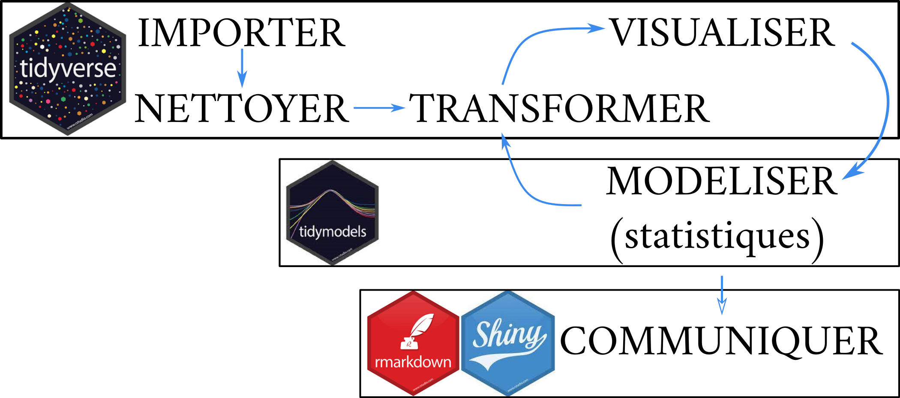

Cycle de formations pour l’analyse de données
avec RStudio, le Tidyverse et Rmarkdown
avec RStudio, le Tidyverse et Rmarkdown
Version 5.0.0

1 Objectifs
L’objectif de ce cycle de formations est de permettre aux chercheur-se-s en sciences expérimentales d’acquérir les bases du fonctionnement du logiciel RStudio, du Tidyverse et de Rmarkdown pour l’analyse de données (manipulation de tableaux, production de graphiques, démarche de l’analyse statistique) et la production de rapports. L’objectif opérationnel est de permettre la production de résultats publiables avec un logiciel de programmation et un outil unique, afin d’appliquer une démarche qualité (transparence et reproductibilité) à l’analyse de données et d’être en mesure de fournir aux éditeurs le code reproductible qui a généré les résultats à publier. Ce cycle de formations se concentre principalement sur les étapes de l’analyse de données en amont de l’analyse statistique (manipulation de tableaux, graphiques) et a l’originalité d’être entièrement basée sur le package et langage Tidyverse, conçu spécifiquement pour la manipulation de données et la production de graphiques et de proposer une méthode originale adaptée aux débutant-e-s en programmation. La démarche d’analyse statistique est cependant abordée à travers un module dédié au package Tidymodels, présentant la démarche de l’analyse statistique selon la philosophie du Tidyverse.
1.1 Pourquoi utiliser R pour manipuler ses tableaux et faire ses graphiques?
L’analyse de données ne consiste pas simplement à effectuer un test statistique, mais est une suite d’opérations (fig.1) quasiment immuables: manipuler ses tableaux de données, créer des graphiques pour les visualiser, effectuer des tests statistiques et communiquer.

Figure 1: Les étapes de l’analyse de données.
L’expérience montre que dans la première chaîne d’opérations, avant les tests statistiques, les opérations de manipulations de tableaux de données et de production de graphiques prennent une place importante (bien souvent plus importante que les statistiques) (fig.2), et qu’elles peuvent être complexes (fusion de tableaux de tailles différentes, restructuration des données, calculs selon certaines conditions), ce qui rend l’utilisation d’Excel, qui est couramment utilisé pour faire ces opérations, malaisé et source d’erreurs. En effet, manipuler des tableaux de données “à la main” (souris, copié/collé) présente un risque d’erreurs de manipulations non négligeable, d’autant plus que les tableaux sont longs et les opérations complexes. Utiliser un logiciel de programmation basé sur du code informatique comme R permet d’éliminer les erreurs de manipulation: si la consigne du code est de sélectionner uniquement les observations d’une date donnée, R ne fera pas l’erreur d’en oublier une.
L’utilisation d’Excel rend également difficile la transparence et la reproductibilité, qui sont au cœur de la démarche scientifique et de la démarche qualité. En effet, manipuler ses données avec Excel implique des opérations invisibles pour une autre personne que celle qui les a conduites ainsi que la multiplication des feuilles dans lesquelles sont conduites ces opérations, ce qui les rend difficilement traçable et reproductible. Dans un contexte de travail en équipe et/ou de roulement des salariés, être en mesure de comprendre ce qu’à fait un collègue et de reproduire son travail est fondamental, ce qui est rendu possible par l’utilisation de R, le code commenté étant parfaitement transparent et reproductible. De plus, les éditeurs d’articles scientifiques commencent à demander de joindre aux articles soumis le code reproductible qui a permis de générer les résultats, que ce soient des tableaux, des graphiques ou des analyses statistiques, tendance qui va progressivement se généraliser. Il devient donc fondamental pour tout-e chercheur-se de manipuler ses données et faire ses graphiques avec un logiciel de programmation.
R est également un outil polyvalent qui propose aussi bien des outils pour manipuler les données et produire les graphiques que pour effectuer les analyses statistiques et réaliser les supports de communication (rapport, présentation). Il est alors envisageable d’utiliser un outil unique pour effectuer l’intégralité de la chaine d’analyses de données, ce qui est un gain indéniable d’efficacité (on ne se forme qu’à seul outil). Enfin, R est un logiciel libre et gratuit et la très grande dynamique de la communauté mondiale (forums, blogs, sites internet, tutoriels) apportent un soutien indiscutable lorsqu’il s’agit de résoudre rapidement des problèmes ou de poursuivre son autoformation.

Figure 2: Illustration de la place relative prise par la manipulation
des tableaux, la production des graphiques et l’analyse statistiques
dans l’analyse de données, avec pour exemple un des graphiques de ma
première publication (Forey et. al, 2016).
1.2 Pourquoi utiliser le Tidyverse?
Le Tidyverse est un ensemble de packages (boites à outils contenant des fonctions) comprenant des fonctions permettant la manipulation de tableaux de données et la création de graphiques, c’est à dire les étapes de l’analyse de données en amont de l’analyse statistique (fig.3). Ces packages partagent la même logique, grammaire et structure des données (dataframe), les rendant interopérables.
Les avantages du Tidyverse sont:
de proposer dans un seul package l’essentiel des fonctions nécessaires pour la manipulation des tableaux et la production de graphiques
d’utiliser une syntaxe conçue pour parler à l’humain avant la machine (noms de fonctions explicites, familles de fonctions au même préfixe, un verbe=une fonction) ce qui permet notamment aux débutant-e-s en programmation d’accéder à un outil opérationnel rapidement
d’être développé par l’équipe de RStudio, ce qui apporte l’assurance du maintien et de l’amélioration permanente de toutes ses fonctionnalités
de permettre de faire des graphiques de grande qualité à travers le package ggplot2 et ses 81 packages satellites
Figure 3: Les packages constitutifs du Tidyverse et autres packages utilisés pendant la formation (rmarkdown, knitr, shiny) et leur place dans la chaîne d’analyse de données.